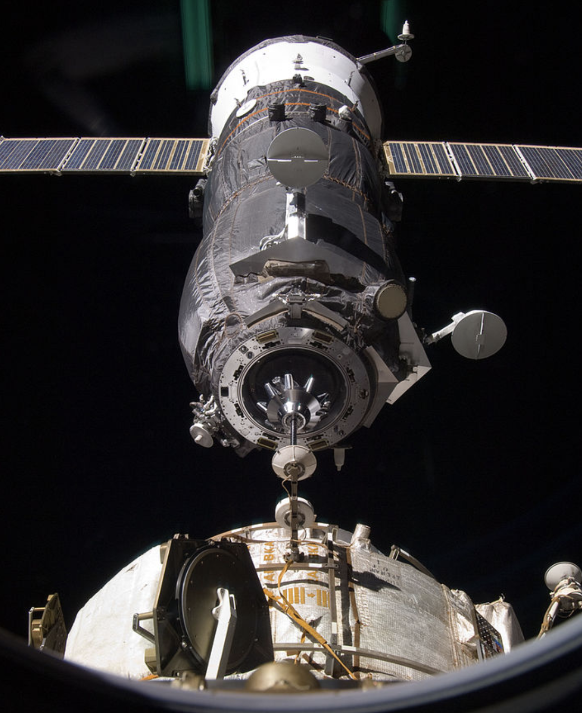

Commercial orbital fuel depots servicing geostationary orbit
Many geostationary satellites are running out of propellant before the end of their useful life. Replacing them costs hundreds of millions of dollars.
By 2025 we expect to see several missions launching vehicles designed to extend the life of these GEO assets and the commercial use of “fuel depots,” enabled by decreasing launch costs. Fuel depots will provide propellant to the service vehicles so they may continue to extend other customers’ operations.
Geostationary satellites appear to hang over the same spot on Earth, performing services like communications, weather monitoring, and surveillance. Their orbit is very specific, around the equator (orbital inclination of zero) at about 22,300 miles altitude. From that high up, the view of Earth is expansive (you’d only need 5 or 6 satellites to have a simultaneous view of the entire equatorial region vs. the 100s-1000s of satellites required in low-Earth orbit). Their missions also typically require more instrumentation and power which significantly grow their size as compared to the low-Earth orbit (LEO) satellites providing low latency broadband data services.
Current use cases for commercial orbital fuel depots include:
- In-orbit refueling currently performed by the expendable, unmanned Russian Progress craft. Storable propellant used is unsymmetrical dimethylhydrazine ((CH3)2NNH2) as the fuel and nitrogen tetroxide (N2O4) as the oxidizer. (“Hypergolics” that ignite upon contact with each other). Fuel transferred through fluid connectors in the docking hardware.

An unpiloted Progress vehicle approaches the ISS carrying 1,653 pounds of propellant. Source: NASA
- A robotic refueling mission (RRM) in 2013 on the International Space Station demonstrated more complex operations on satellite hardware that had not been designed for refueling. Activities included peeling back thermal insulation, unscrewing and replacing caps, and opening fuel valves to transfer liquid ethanol (a safe simulant of satellite propellant hydrazine).
- SpaceLogistics of Northrop Grumman used its Mission Extension Vehicles (MEVs) in 2020 and again in 2021 to extend the operational life of several-ton communications satellites by five years. The satellites were designed and deployed before on-orbit servicing was even possible. The intent is that after five years, the MEVs will have capacity to move on to service other satellites. SpaceLogistics announced plans for 7 additional missions into 2026 (at the CONFERS Global Satellite Servicing Forum 2021).
- OrbitFab deployed its first fuel depot in June of 2021. The propellant is 100 lbs. of high-test peroxide, a green alternative to hydrazine.
{kind=link}